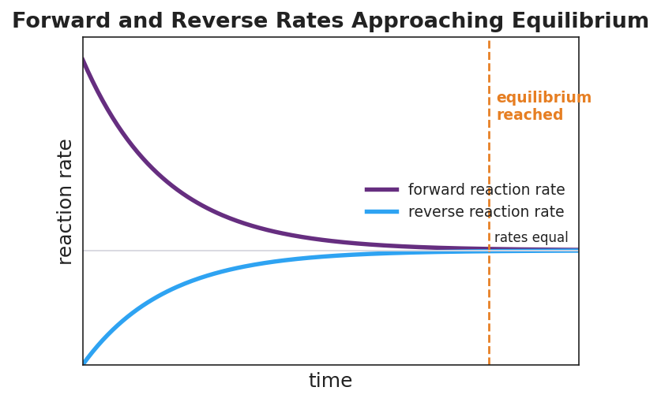

01 Phenomenon
An unopened bottle of soda keeps its fizz on the shelf for months. The moment you open it and leave it out overnight, it goes flat. While the cap was on, nothing was added or taken away. Inside the sealed bottle, dissolved carbon dioxide is constantly escaping out of the liquid into the small space at the top — and constantly re-dissolving back in — at equal rates: CO₂(aq) ⇌ CO₂(g). Open the bottle, and the escaped gas drifts off into the room and never returns.
02 Driving question
Why does a sealed bottle of soda keep its fizz indefinitely, but go flat once it is opened?
03 Notice & wonder
| I notice… | I wonder… |
|---|---|
Turn & Talk #1: In the sealed bottle, the amount of dissolved fizz stays constant — it doesn’t change. Does “doesn’t change” mean nothing is happening? Or could something be happening that you just can’t see from the outside? Write one sentence.
04 Initial model
Your group has two cups — Reactants (R) and Products (P) — and a pile of counters. You will run a “reversible reaction” and watch what happens.
The transfer rule — repeat each round: 1. Move half of the Reactants cup to the Products cup (round down). (forward) 2. Move one-tenth of the Products cup back to the Reactants cup (round down). (reverse) 3. Count both cups and record below.
Start with all 40 counters in Reactants, 0 in Products.
| Round | Reactants (R) | Products (P) |
|---|---|---|
| Start | 40 | 0 |
| 1 | ||
| 2 | ||
| 3 | ||
| 4 | ||
| 5 | ||
| 6 | ||
| 7 |
By round 7, the counts barely change. But you are still moving counters every round. In your own words: how can the counts stay the same while counters keep moving?
05 Investigate
Part 1 — Count the transfers at the steady state
Go back to your last round. Count exactly how many counters moved each direction.
Counters that moved forward (R → P) in the last round: _______
Counters that moved back (P → R) in the last round: _______
Are those two numbers close to equal? _______
Your final counts: Reactants = _______ Products = _______. Are the two cups equal to each other? _______
In one sentence, which is equal at the steady state — the rates counters move, or the amounts in the two cups?
Part 2 — Reading the rate graph
Look at figures/equilibrium_rates.png:

At the very start, which rate is higher — the forward (purple) or the reverse (blue)? _______________
As time goes on, the forward rate ______________ (rises / falls) and the reverse rate ______________ (rises / falls).
At the dashed “equilibrium reached” line, what is true about the two rates? _______________________________________________
After the dashed line, what happens to the concentrations of reactants and products?
- Key question: At the dashed line, are the two rates equal to zero (reaction stopped), or equal to each other (reaction still running both ways)? How can you tell from the graph?
06 Make it make sense
For each situation below, decide whether the system is at equilibrium, and explain using equal rates and constant concentrations.
In a sealed soda bottle, CO₂ escapes from the liquid into the headspace and re-dissolves back into the liquid at the same rate. The amount of dissolved CO₂ never changes.
- Is this system at equilibrium? _______
- Which two rates are equal? _______________________________________________
- Is the dissolved-CO₂ reaction stopped? Explain: _______________________________________________
You open the soda bottle and leave it out. CO₂ keeps escaping into the room, but almost none re-dissolves. The dissolved CO₂ slowly drops to zero.
- Is this system at equilibrium? _______
- Why not? (Think about the reverse process.) _______________________________________________
- What happens to the fizz over time? _______________________________________________
In your cup simulation, by round 7 the cups read about 7 (Reactants) and 33 (Products). The counts hold steady, but counters keep moving every round.
- Is this system at equilibrium? _______
- The cups are NOT equal (7 vs. 33). Does that mean it is NOT at equilibrium? Explain. _______________________________________________
- What IS equal at this steady state? _______________________________________________
07 Key vocabulary
- reversible reaction
- a reaction that can proceed in both the forward and reverse directions, written with a double arrow (⇌); both directions occur at the same time, allowing the system to reach a balance
- equilibrium
- the condition in a reversible reaction at which the forward and reverse reactions occur at equal rates, so the concentrations of all reactants and products stay constant; equal *rates*, not equal *amounts*
- dynamic equilibrium
- equilibrium understood at the particle scale: the forward and reverse reactions never stop — they continue at equal rates — so the system is constantly changing underneath while appearing macroscopically unchanged (constant concentrations, color, and pressure)
Use each term in a sentence about today’s investigation. Do not copy the definition — describe something you actually did or observed.
reversible reaction: _______________________________________________ _______________________________________________
equilibrium: _______________________________________________ _______________________________________________
dynamic equilibrium: _______________________________________________ _______________________________________________
08 Revise your model
Return to your Initial Model (your cup explanation). Add vocabulary labels:
Label the steady state where counts stop changing: _______________________
Label what is equal at that steady state (the forward and reverse ___________): _______________________
Label what stays the same in each cup (the ___________): _______________________
Write a revised appositive sentence (use dashes) defining the result you observed:
Dynamic equilibrium — _______________________________________________ — is not a stopped reaction.
Then finish this Because / But / So sentence:
A sealed bottle of soda keeps its fizz, but an open bottle goes flat, because __________________________________________, but __________________________________________, so __________________________________________.
09 Exit ticket
A sealed flask is half-filled with liquid water and left to sit. After a while, the water level and the humidity inside the flask stop changing. The process is H₂O(l) ⇌ H₂O(g).
(a) State the TWO characteristics that tell you this system has reached equilibrium.
(b) A classmate says, “The water level stopped changing, so evaporation must have stopped.” Explain in one sentence why this is wrong.
(c) Write ONE appositive sentence (using dashes) that defines dynamic equilibrium.
10 Explore further
- Cup-transfer equilibrium simulation: Two cups (label them "reactants" and "products") and a supply of counters (beans, chips, or paper squares). Each round, students move a *fixed fraction* of each cup's contents to the other cup — e.g., transfer half of the reactant cup forward and a tenth of the product cup back. Students count and record both cups after each round. After several rounds the counts stop changing (equilibrium) even though counters keep moving every round. This makes the "dynamic" part of dynamic equilibrium concrete and countable.
- CoCl₂ equilibrium color change (teacher demo or class set): The cobalt(II) chloride equilibrium [Co(H₂O)₆]²⁺ (pink) ⇌ [CoCl₄]²⁻ (blue) shifts visibly with added water (pink) or added concentrated HCl/heat (blue). Students observe that the same solution sits at a stable intermediate color when undisturbed — and that the color holds steady, showing constant concentrations at equilibrium. (Today's lesson uses this only to *establish* equilibrium; the directional shifting is the hook for the next lesson on Le Châtelier's principle.)
- Rate-graph reading: Students read `figures/equilibrium_rates.png` to identify the moment the forward and reverse rates become equal and to articulate what is happening to concentrations after that moment.